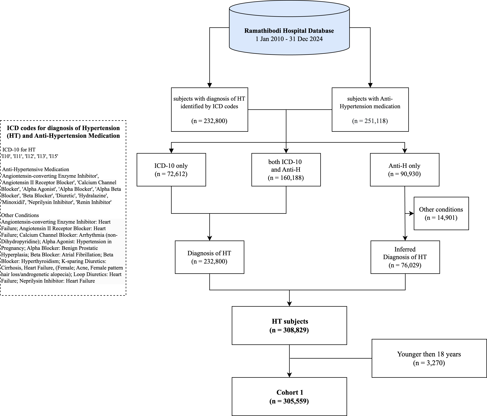

Hypertension Data Warehouse
- Author: Htun Teza
- Date: 1 August 2025
Contents
Hypertension Data Warehouse
2010-2024/12 (15 years)
Documentation on cohort identification procedure can be found here. This process has been peer-reviewed and published here.
Data Flow

Entity Relationship Diagram

Variables
The complete list of variables can be found here.

Hypertension cohort update
Data Warehouse Timeline
ETL timeline
With our latest data extraction (ETL) in December 2024,
- New case update to December 2024 (Bi-Annually)
- Follow up visits update to December 2024 (Quarterly).
Update Summary
Cohort Update

Hypertension Cohort (15 years)

Supplementary
Codes
The Python notebook for cohort identification can be found at in codes folder here.
[!NOTE]
As of March 5, 2024, the data preprocessing pipeline is updated to use Polars instead of Pandas, due to its multi-thread processing prowess.
Maplist
The Map list for medications and other indications can be found at in maplist folder here.
Data Request
More details regarding this and other cohorts can be found here at CEB-RAMA-MU. Data request can be made on the same webpage.
Usage
Publications
- Teza, H., Boonmanunt, S., Unwanatham, N., Thadanipon, K., Limpijankit, T., Pattanaprateep, O., Pattanateepapon, A., McKay, G. J., Attia, J., & Thakkinstian, A. (2023). Evaluation of transitions from early hypertension to hypertensive chronic kidney disease, coronary artery disease, stroke and mortality: a Thai real-world data cohort. Frontiers in Cardiovascular Medicine, 10. https://doi.org/10.3389/fcvm.2023.1170010
Conferences
- Teza, H., Pattanaprateep, O., Boonmanunt, S., Thadanipon, K., Limpijankit, T., Pattanateepapon, A., Unwanatham, N., & Thakkinstian, A. (2023). Hypertension and Its Associated Complications: A Thai Real-World Clinical Cohort. Poster session presented at the International Society for Pharmacoeconomics and Outcomes Research (ISPOR) 2023, Boston, MA.
Competitions
- Thailand Health AI Datathon 2023